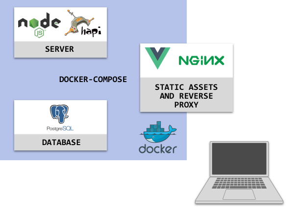
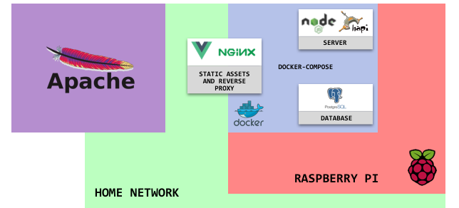

JPRDY!
In the summer of 2018, a colleague shared with me a link to j-archive.com, a site that keeps record of the questions and answers from every game of Jeopardy! since the show began in 1984. Shortly afterward, I began working on JPRDY!, a web-based game built on the j-archive dataset.
A quick google search for "jeopardy dataset" yielded a reddit post which provided everything I needed to get started. (Later on, I wrote a python script to scrape the data so that more recent shows would be included.) I spun up a postgresql docker container and ran the import. In order to serve the data, I created another docker container running node.js with hapi.js. To serve the client static assets, I created a nginx container. For the client framework, I used Vue.js. All of the containers run locally within a docker-compose orchestration.
DEVELOPMENT ARCHITECTURE

JPRDY! uses websockets to publish game state to each of the clients. A user begins by entering a nickname. This nickname is used as a session identifier and must be unique. After the nickname is entered, a player can create a new game or join an existing game in the JPRDY! "lobby."
In a game, the host is given first-pick of a category tile. The action of picking a tile sends a message to the websocket server, which then publishes a new state to all of the subscribed clients. After a tile is picked, a clue is displayed and players are given the opportunity to "buzz in" by pressing the space-bar.
User's answers are evaluated using the Dice coefficient which compares similarity between two strings. The user's answer must be a certain percentage similar to the actual answer stored in the database. Additional logic was added to support answers that do not exactly match, yet are still correct. For example, a user should be able to enter "Jefferson" when the actual answer string is "Thomas Jefferson" and receive credit.
PRODUCTION ARCHITECTURE

For production, I'm running JPRDY! on a Raspberry Pi with the same docker-compose setup used to develop locally. The nginx port on the Pi is exposed to my home network. External requests to taylordeckard.me/jprdy are proxied from another server running apache. The overall architecture looks like this: